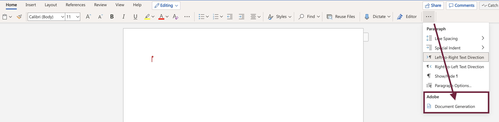
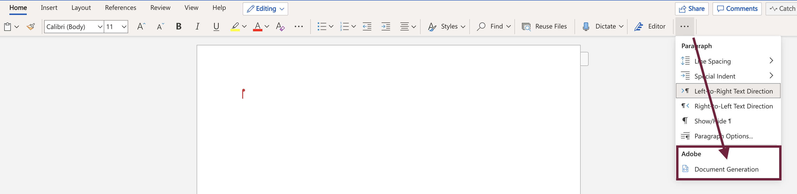

Word Add-in¶
Document Generation Word Add-in provides the capability to author templates to generate data-driven Word and PDF documents. It provides the capability to add different tags and enable users to author templates seamlessly. You can refer to the Add-In Video Demo for the explanation on how to use the add-in.
How to install¶
You can get the Document Generation Word Add-in from the Microsoft Office store. This add-in can be installed in both the web-based and desktop launched MS Word application. Access to the store is slightly different for each environment. Detailed instructions for both are described below.
Note
If you are an Enterprise User, organizational Office 365 Admins or user with admin rights can centrally install the add-in at the tenant level, and control access at the user level if desired.
Installing the add-in for the web-based client
Log in to your 365 Office account and open the word application.
Navigate to the Insert tab, and click the Add-ins icon in the insert section. Office Add-ins pop-up page will open up.
Check for the Adobe Document Generation add-in in the MY ADDINS tab on Add-ins pop-up page.
Navigate to the STORE tab in the Office Add-ins pop-up, if the add-in is not enabled/installed.
Note
If you face an issue, as illustrated below, while accessing your Office Add-ins store then you can contact your organizational Office 365 Admins to get Add-in installed at the tenant level.
In the top left search box, search for Adobe Document Generation and click on add button.
After enabling/installing the add-in, you will find a new Adobe Document Generation add-in on the Home tab.
 

Installing the add-in for the desktop client
Open your desktop Office application.
Navigate to the Insert tab, and click the Get Add-ins option.
Check for the Adobe Document Generation add-in in the MY ADDINS tab on Add-ins pop-up page.
Navigate to STORE tab in the Office Add-ins popup, if add-in is not already enabled/installed.
Note
If you face an issue, as illustrated below, while accessing your Office Add-ins store then you can contact your organizational Office 365 Admins to get Add-in installed at the tenant level.
In the top left search box, search for Adobe Document Generation and click on add button to install.
After enabling/installing the add-in, you will find a new Adobe Document Generation add-in on the Home tab.
Note
Please refer to the official Microsoft Add-In Installation Guide for detailed steps on Add-In installation.
Installing at the Tenant level¶
Installing at the tenant level allows the admin to expose the add-in by default, saving the users the installation steps, and ensuring that all users have access without issue.
Note
The below process enables the add-in at the tenant level for the whole user base. Check here if you would like more granular control over the deployment.
Determine if Centralized Deployment of add-ins works for your organization.
The enablement is quick and easy, taking only about 5 minutes:
Log in as the Tenant admin, and navigate to the admin center from the app launcher.
Log in as the Tenant admin, and navigate to the admin center from the app launcher.
In the admin center, go to the Settings > Add-ins page. If you don’t see the Add-in Page, go to the Settings > Integrated apps.
On the top of the Integrated apps page, click the Add-ins link.
Select Deploy Add-in at the top of the page, and then select Next.
Select the option to add an add-in from the Office Store. In the top left search box, search for Adobe Document Generation and click on add button.
Assign Users
Everyone - Applies the deployment method to all users in the Tenant.
Specific users/groups - Applies the deployment method to only the selected users or groups.
Just me - Applies the deployment method to just the user (admin) doing the configuration
{kind=link}
Click Deploy after assigning users.
Note
Users might need to relaunch Office to view the add-in icon on the app ribbon.
Add-In Video Demo¶
Document Generation add-in is developed in such a way that you don’t need to learn any code. The system does it all for you, as you’ll see in the video below: